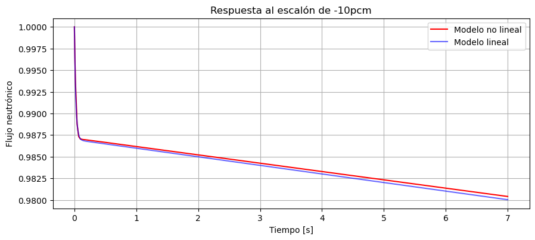
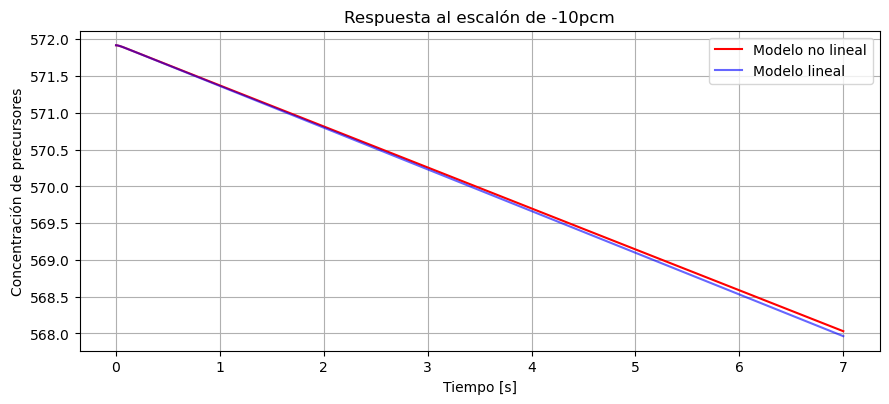
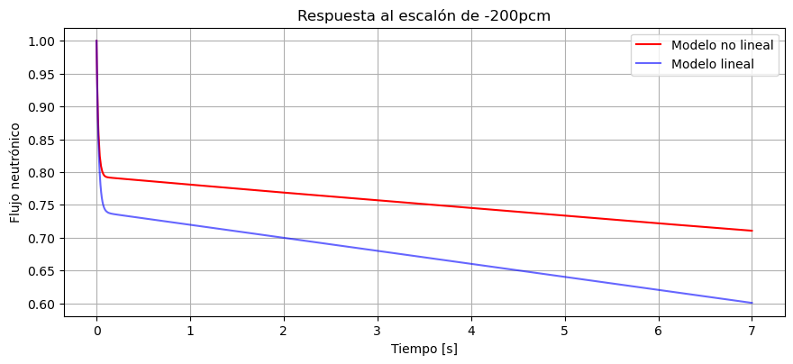
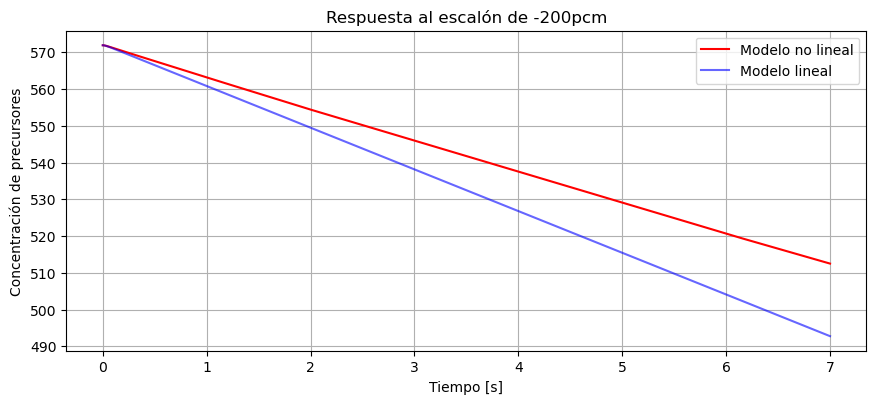

Ecuaciones de Cinética Puntual#
Ecuaciones de cinética de un reactor nuclear#
Las ecuaciones de cinética puntual del núcleo de un reactor a un grupo de energía y a un grupo de precursores sin fuente de neutrones son:
con \(n\) el flujo neutrónico normalizado (en realidad es población de neutrones, pero bajo ciertas condiciones se puede considerar proporcional al flujo neutrónico o potencia nuclear), \(c\) la concentración de precursores, y \(\rho\) la reactividad introducida en el mismo por las barras de control. Los parámetros del sistema son: \(\Lambda = 1,76e^{-4} s\) (tiempo de reproducción de los neutrones rápidos), \(\lambda = 0,076 1/s\) (constante de decaimiento de los precursores) y \(\beta = 765\)pcm (fracción de neutrones retardados que son emitidos por los precursores).
import sympy as sp
sp.init_printing()
n, r, b, L, l, c = sp.symbols('n, rho, beta, Lambda, lambda, c')
Definimos las ecuaciones de estados, es decir, las derivadas de las variables de estados en función de los estados y las entradas.
dn=(r-b)/L*n+l*c
dn
dc=b/L*n-l*c
dc
Ahora le decimos a sympy que lo represente en forma matricial:
s=sp.Matrix([dn,dc]) #las ecuaciones de estados
s
x=sp.Matrix([n,c]) #definimos el vector de estados
x
u=sp.Matrix([r]) #definimos el vector de entradas
u
Linealización utilizando SymPy#
Recordando la función Jacobiano, podemos valernos de esta para linealizar el sistema
A=s.jacobian(x) # la matriz A del espacio de estados
B=s.jacobian(u) #la matriz B del espacio de estados
A
B
Finalmente evaluamos las matrices A y B en los valores de los parámetros que tenemos dados.
A.subs([(l, 0.076), (b,765e-5),(L,1.76e-4)])
B.subs([(l, 0.076), (B,765e-5),(L,1.76e-4)])
Para obtener el punto de equilibrio, suponemos que trabajaremos alrededor de \(n=1\), y lo que se hace es igualar a cero las ecuaciones de la derivada.
s2=s.subs([(l, 0.076), (b,765e-5),(L,1.76e-4),(n,1)])
sol0=sp.solve(s2,(c,r))
c0=sol0[c]
r0=sol0[r]
An=A.subs([(l, 0.076), (b,765e-5),(L,1.76e-4),(n,1),(r,r0),(c,c0)])
Bn=B.subs([(l, 0.076), (b,765e-5),(L,1.76e-4),(n,1),(r,r0),(c,c0)])
Simulación numérica#
from scipy.integrate import solve_ivp
import matplotlib.pyplot as plt
# %matplotlib qt5 # descomentar para ver las figuras en ventanas emergentes
l=0.076
b=765e-5
L=1.76e-4
n0=1
def dx(t,x):
n=x[0]
c=x[1]
r= r0 if t<0 else r0 -10e-5 #1000pcm para poner un valor
dn=(r-b)/L*n+l*c
dc=b/L*n-l*c
return ([dn,dc])
sol = solve_ivp(dx, (0,7), (n0,c0), method='BDF')
t= sol.t
n=sol.y[0]
c=sol.y[1]
La simulación dinámica del sistema lineal la podemos hacer usando directamente el módulo de control.
import control as ctrl
import numpy as np
Cn=np.eye(2)
Dn=np.zeros((2,1))
sys = ctrl.ss(An,Bn,Cn,Dn)
t2,y2 = ctrl.step_response(sys, T=np.linspace(0,7,1001))
Entonces ahora podemos visualizar los resultados en las siguientes figuras:


Vemos que el sistema linealizado es una muy buena aproximación del no lineal. Esto es por que la perturbación de 10pcm es suficientemente chica y el sistema no se aleja demasiado del punto del cual linealizamos.
Probemos aumentado un poco más la reactividad de entrada a 200 pcm#
def dx(t,x):
n=x[0]
c=x[1]
r= r0 if t<0 else r0 -200e-5 #1000pcm para poner un valor
dn=(r-b)/L*n+l*c
dc=b/L*n-l*c
return ([dn,dc])
sol = solve_ivp(dx, (0,7), (n0,c0), method='BDF')
t= sol.t
n=sol.y[0]
c=sol.y[1]
Y los resultados los vemos en las siguientes gráficas:


Vemos como ahora la aproximación es bastante peor a la que teníamos cuando lo perturbamos con 10 pcm.